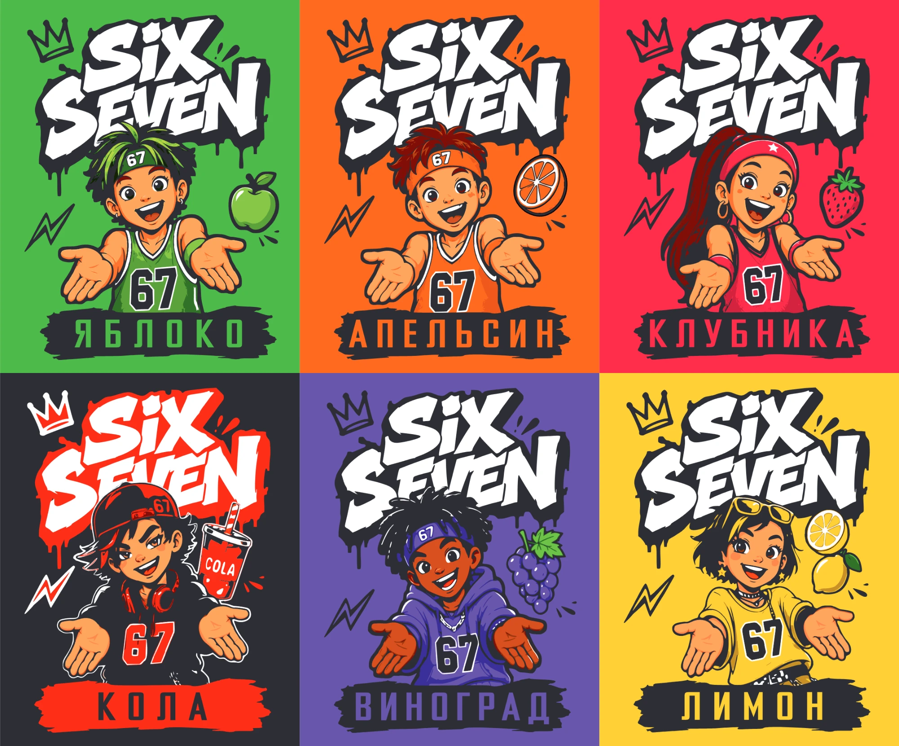

Почему Dictionary.com выбрал «67» словом 2025 года?
Коротко
Dictionary.com объявил «67» словом 2025 года 29 октября 2025 года и назвал его «лингвистической капсулой времени». По данным словаря, в октябре 2025 года «67» встречалось в цифровых медиа примерно в шесть раз чаще, чем за весь 2024 год. При этом редакция прямо признаёт, что точного значения у выражения нет — и именно это делает его отражением года.

Что такое «слово года» у Dictionary.com?
Dictionary.com — один из крупнейших онлайн-словарей английского языка. Каждый год его редакция выбирает слово, которое, по её мнению, лучше всего отражает прошедший год.
Решение принимают лексикографы. Они анализируют заголовки новостей, тренды в соцсетях, поисковые запросы и другие данные. Ищут слово, которое влияло на разговоры и в интернете, и вне его.
Предыдущие слова года у Dictionary.com: «pandemic» (2020), «allyship» (2021), «woman» (2022), «hallucinate» (2023) и «demure» (2024). На этом фоне выбор числа, которое не имеет точного значения, выглядит необычно.
Какие данные стояли за выбором «67»?
Главный аргумент — масштаб. По данным Dictionary.com, с июня 2025 года число поисковых запросов «67» выросло более чем в шесть раз. У других двузначных чисел заметной динамики за тот же период не было.
ABC News приводит ещё одну оценку словаря: только за октябрь 2025 года «67» появлялось в цифровых медиа примерно в шесть раз чаще, чем за весь 2024 год.
Отдельно редакция отмечает офлайн-распространение. По её наблюдениям, учителя обменивались советами, как отучить учеников выкрикивать «шесть-семь» на уроках.
Как Dictionary.com объясняет значение «67»?
Словарь честно называет значение «сложным». Одни используют «67» в смысле «так себе» или «может, так, а может, этак». Часто фразу сопровождает жест: ладони вверх, руки двигаются вверх и вниз.
Другие отвечают «шесть-семь» почти на любой вопрос. Dictionary.com относит выражение к brainrot-сленгу — намеренно абсурдным словам, смысл которых в том, чтобы быть в курсе шутки.
Стив Джонсон, директор по лексикографии Dictionary Media Group, описал «67» так: это «отчасти внутренняя шутка, отчасти социальный сигнал и отчасти представление». По его словам, люди, которые произносят «67», не просто повторяют мем — они «выкрикивают эмоцию».
Откуда взялось само выражение, подробно разобрано в статье что значит «67» и откуда взялся мем.
Можно ли считать число словом?
Вопрос закономерный: «67» записывают цифрами, а не буквами. Dictionary.com отвечает на него через употребление. Значение имеет не форма записи, а то, что выражение произносят, пишут и понимают как отдельную единицу речи.
У «67» есть несколько устойчивых написаний: 67, 6 7, 6-7 и six-seven. Есть и правило произношения — только «six seven», никогда «sixty-seven». Неправильное произношение сразу выдаёт человека, который не в теме.
Словарь также фиксирует производные выражения, которые появились вслед за «67». Это ещё один признак живого слова: вокруг него складывается целое семейство шуток и вариаций.
Наконец, у «67» есть устойчивая функция в разговоре. Оно служит сигналом принадлежности к группе. По этому признаку выражение работает как любое сленговое слово, даже если его словарное значение размыто.
Чем «67» отличается от прошлых слов года?
Прежние победители были существительными, прилагательными или глаголами с понятным словарным значением. «Pandemic» описывал событие, «hallucinate» — новое значение слова в контексте искусственного интеллекта.
«67» — междометие. В интервью CBS News Стив Джонсон отметил, что это первое за долгое время слово года, которое скорее является восклицанием, чем словом в привычном смысле.
Есть и ещё одно отличие. Распространили «67» прежде всего дети и подростки поколения Альфа. Dictionary.com пишет, что сленг этого поколения «известен своей неуловимостью», и взрослым непросто за ним успевать.
Редакция также подчёркивает скорость. По её словам, «67» показывает, с какой скоростью новое слово может облететь весь мир.
Какие слова ещё были в шорт-листе?
Помимо «67», Dictionary.com рассматривал десять кандидатов:
- agentic — об ИИ-системах, которые действуют самостоятельно;
- aura farming — работа над своей харизмой и «аурой»;
- broligarchy — концентрация власти у технологических миллиардеров;
- clanker — насмешливое слово для роботов и ИИ;
- эмодзи 🧨 — шутливое обозначение пары Тейлор Свифт и Трэвиса Келси;
- Gen Z stare — пустой, безэмоциональный взгляд, приписываемый поколению Z;
- kiss cam — после вирусного эпизода на концерте Coldplay;
- overtourism — избыток туристов в популярных местах;
- tariff — пошлины, ставшие темой года в экономике и политике;
- tradwife — «традиционная жена», образ консервативного домашнего уклада.
Почти все кандидаты связаны с интернетом, технологиями или экономикой. «67» выделяется: это единственное слово, которое пришло из детской среды.
Что выбрали другие словари в 2025 году?
Слово года выбирает не только Dictionary.com. Euronews собрал решения крупных словарей за 2025 год:
- Oxford — «rage bait», контент, который специально провоцирует раздражение;
- Cambridge — «parasocial», чувство связи со знаменитостью, персонажем или ИИ, которых человек не знает лично;
- Collins — «vibe coding», создание программ с помощью ИИ по описанию на обычном языке;
- Merriam-Webster — «slop», некачественный цифровой контент, массово созданный ИИ;
- Macquarie (Австралия) — «AI slop».
Общая тема года у большинства словарей — искусственный интеллект и жизнь в соцсетях. Dictionary.com выбрал другой угол: не технологию, а то, как говорит новое поколение.
Что выбор словаря значит для бизнеса?
Признание крупного словаря не делает слово популярнее само по себе. Но оно фиксирует факт: выражение вышло за пределы одной соцсети и одной страны и стало частью массовой культуры.
Для поставщиков и розницы это полезный ориентир. Если о слове пишут словари и крупные СМИ, его знают уже не только подростки, но и взрослые.
На этом узнавании построены леденцы Six Seven: число на упаковке не нужно объяснять покупателю. Остальное — формат, вкусы и место у кассы — решает уже сам продукт.
Источники
- Dictionary.com — Word of the Year 2025: 67
- ABC News — Dictionary.com reveals "67" is its 2025 Word of the Year, 29.10.2025
- CBS News — Dictionary.com names "67" its 2025 word of the year, 29.10.2025
- Euronews — Merriam-Webster's 2025 word of the year is "slop", 15.12.2025
- Global News — "Rage bait" is Oxford's 2025 word of the year, 01.12.2025
- University of Cambridge — Cambridge Dictionary Word of the Year 2025: parasocial
- CNN via KVIA — "Vibe coding" named Collins Dictionary's word of the year, 06.11.2025